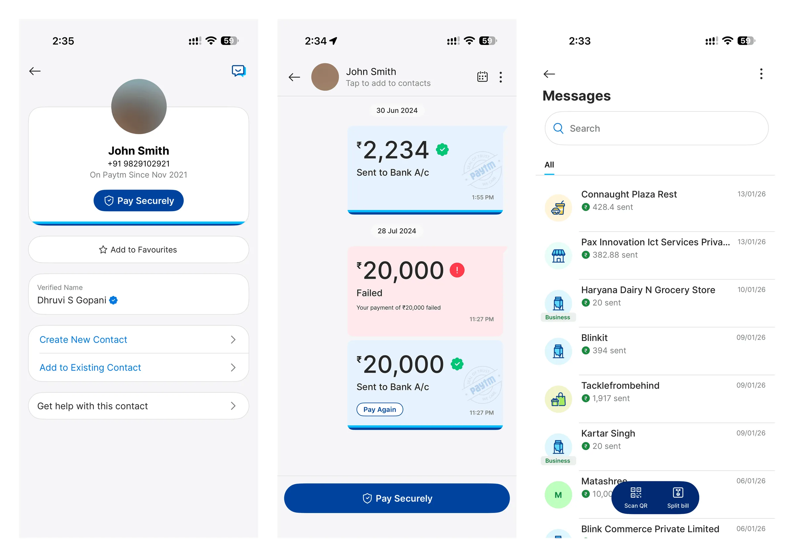
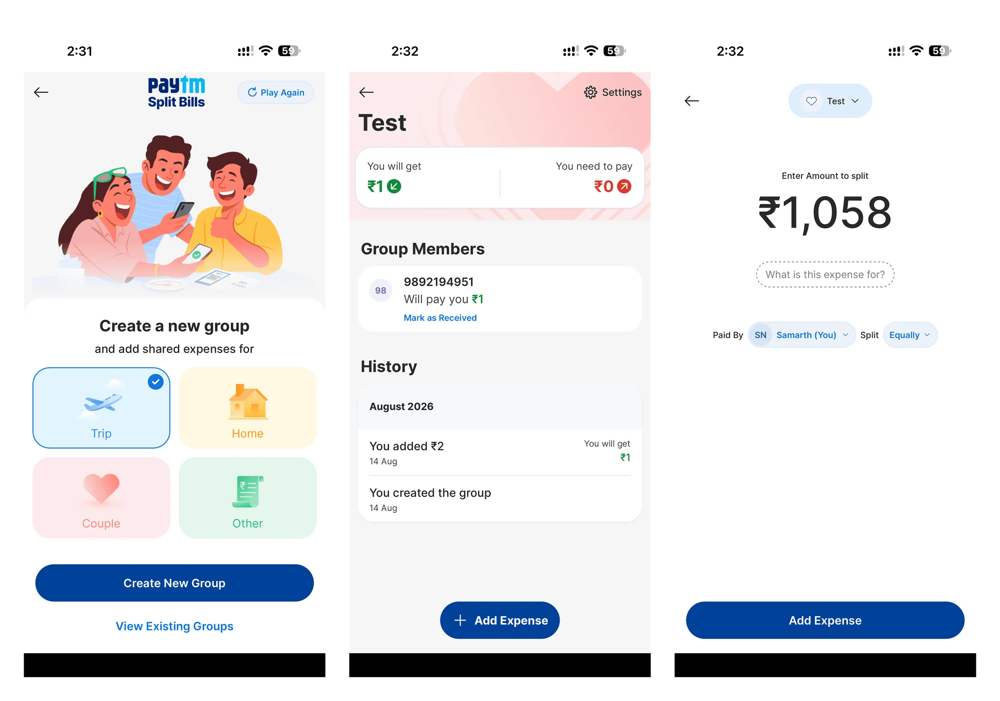
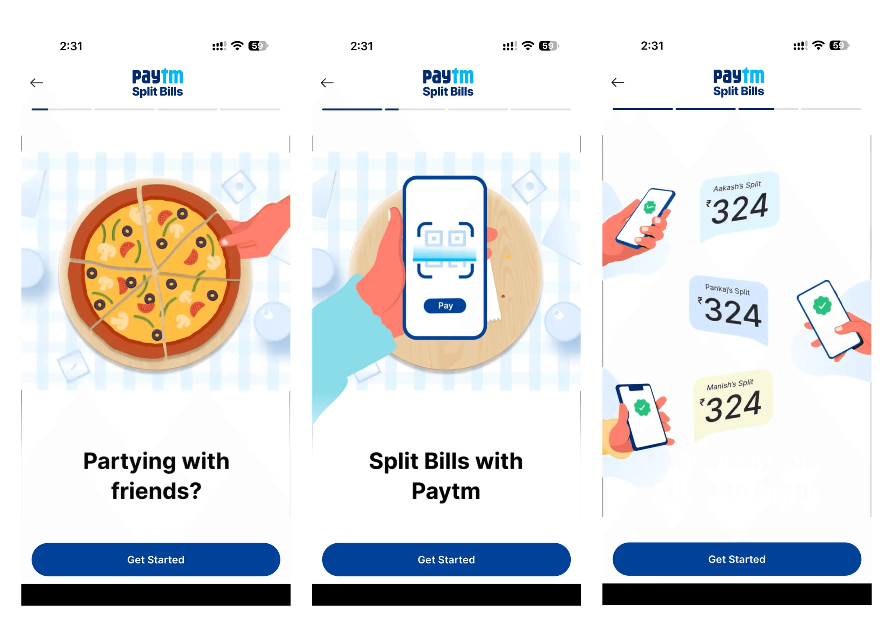

(04)
MakeMyTrip
Bus bookings dropped at checkout. I redesigned the flow: 72% faster checkout, 34% lower drop-off.
UX DesignResearchConversionMobile
Open
Social Payments for 100M+ Monthly Users
Not everyone likes to read too much nowadays (thanks TikTok). See a comic strip?

I joined a team that was losing users. Competitors had adopted new technology faster, and people were moving to apps with faster payments across banks and payment features built around community.
Paytm had tried chat two years earlier and dropped it. It ran on a third party, messages weren't instant, and payments made in it were hard to trace.
A native chat built around payments, to start conversations, build community and bring people back to pay again.
Chat would be the first thing people saw when they opened the app. With a base that large, serving existing users came first.
Compliance decided what a payment could show, which icons the RBI allowed, and which payment patterns were off limits.
Paytm's design system had no chat patterns. I built them from the ground up, aligned to the rest of the app.
I started with user research, and it disagreed with the market research. Competitors were adding payments into chats. Our users wanted chat added onto payments.
"I come to Paytm to make payments, let me do that fast."
I studied WhatsApp, Hike, Instagram, Signal, Telegram, WeChat and Messages. The goal was not to reinvent chat. Our edge was payments, so chat had to feel familiar.
I mapped what the business expected at launch against what users expected, then ran a priority matrix with the business. Stickers, split payments, document sharing, audio and images made the cut, because each one supports paying or talking.
With 100M users landing on it, we didn't want to bet on one way in. We built two launch experiences and tested them. In A, you open a chat and find Pay in the menu. In B, paying opens the chat and the pay button stays in view.
B halved the drop, so we shipped it. Competitors moved to a similar model within months.
Paytm's design system had no chat patterns, so I built them from scratch. People reach chat from other parts of the app, so hierarchy and style had to match what they had just seen.
Every payment shows up in the chat as a card. I worked with the regulation, compliance and payments teams on what each card could show: status, traceability and the icons the RBI allowed. In some places my input changed their experiences. In others I adapted to theirs.
Version one launched to 100M users. Split Bills was part of it.
Instead of a form, a shared bill shows as a pizza cut into slices. Adjust the slices, and the split adjusts with them.
I ran QA with the developers on every case I could find: one sticker and many, stacked payment cards, split payments, emoji-only and text-only messages, very long and very short ones. Each was compared against the apps we had studied.



The Paytm design system team led coordination and the animation work.
Feedback after launch showed something the A/B test missed: people often want to talk before they pay. So I merged B with chat-first.
When a chat has no payment yet, the pay button moves into the menu so people see where it went. An empty chat puts a big pay button in the middle.
The market said chat first. Our users said pay first, and the A/B test backed them.
B won, but it still missed that people talk before paying. Listening after launch took the drop from 17% to 12%.
Bus bookings dropped at checkout. I redesigned the flow: 72% faster checkout, 34% lower drop-off.